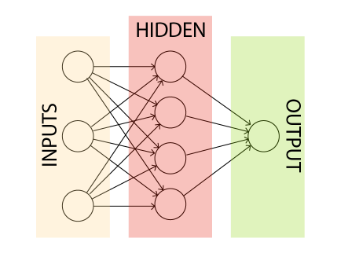

A Network to Classify Handwritten Digits
Now we finally move on to creating our network.
We first need to learn some names of different parts of our network. Conisder this image of network:
The leftmost layer contains the input neurons and the rightmost layer contains the output neurons. In this particular network we only have one output neuron. Between the input and output layers, there are hidden layers. Which is also in this case only one layer. Other networks might have more layers. There is no need to worry about the term "hidden", here it simply means not an input or output.Now, how do we determine the structure of the input layer? It is pretty intuitive. Let's say we want to find wether a given 64x64 greyscale image contains the number 5 written in it. Since we need to feed the network the whole image and images consists of pixels, we can have 64x64 = 4096 input neurons for each pixel. Since our image is greyscale, ech pixel can have a greyscale value of 0 to 1. 0 being completely black and 1 being completely white. Everything in between is a shade of gray. 0.5 being the middle point.
For the output, there can be only one single output neuron, since we just want to know wether the image contains a 5 or not. It's a binary result. Threrefore output of less than 0.5 indicates false (input is not a 5) and greater than 0.5 indicates true (input is a 5).
While the input and output layers are pretty straightforward, its the hidden layers where we want to get more creative. There are no set rules on how to design the hidden layers but researchers over the years have established some design heuristics with some rules of thumb that can help designers get the behaviours they expect from the hidden layers.
Feed-Forward networks: A network where the output of one layer is used as the input of another layer. We've been discussing about feed-forward networks all this time. In a feed-forward network information never fed back, it only flows forward. You can imagine what sort problems we'd face if we had loops in a network. Then a situation might arise where the input of a layer depender on its output. That is hard to make sense of so we refrain from loops. But there are another kind of neural network that can have loops. These are called recurrent neural networks. We will stick to feed-forward networks for now